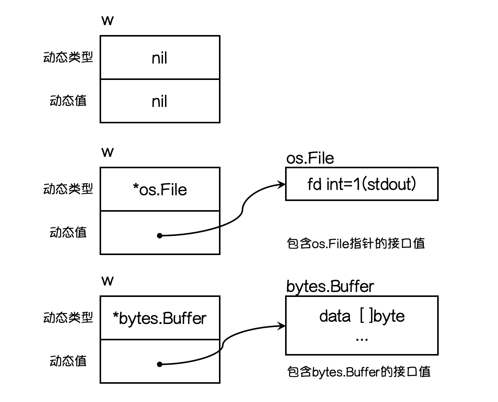

2. 面向对象之接口¶
接口（interface）定义了一个对象的行为规范，只定义规范不实现，由具体的对象来实现规范的细节。
先来看一个案例：
package main
import "fmt"
func main() {
var phone Phone
phone = new(XiaoMi)
phone.call() // 小米中该方法实现了Phone接口的方法
phone = new(HuaWei)
phone.call() // 华为中 实现了Phone 接口的call() 方法
}
// Phone 定义一个手机接口
type Phone interface {
call()
}
// XiaoMi 定义一个手机结构体
type XiaoMi struct {}
// Xiaomi方法
func (xiaomi XiaoMi) call() {
fmt.Println("小米中该方法实现了Phone接口的方法")
}
// HuaWei 华为手机
type HuaWei struct {}
func (huawei HuaWei) call() {
fmt.Println("华为中 实现了Phone 接口的call() 方法")
}
2.1. 接口介绍¶
interface 类型可以定义一组方法，但是这些方法不需要实现，并且 interface 不能包含任何变量，直到某个自定义类型要是用的时候，再根据不同情况实现该接口对应的所有方法。
Go语言提倡面向接口编程。每个接口由数个方法组成，接口的定义格式如下：
type 接口类型名 interface{
方法名1( 参数列表1 ) 返回值列表1
方法名2( 参数列表2 ) 返回值列表2
…
}
其中：
接口名：使用
type将接口定义为自定义的类型名。Go语言的接口在命名时，一般会在单词后面添加er，如有写操作的接口叫Writer，有字符串功能的接口叫Stringer等。接口名最好要能突出该接口的类型含义。方法名：当方法名首字母是大写且这个接口类型名首字母也是大写时，这个方法可以被接口所在的包（package）之外的代码访问。
参数列表、返回值列表：参数列表和返回值列表中的参数变量名可以省略。
例如：
type writer interface{
Write([]byte) error
}
当你看到这个接口类型的值时，你不知道它是什么，唯一知道的就是可以通过它的Write方法来做一些事情。
实现接口所有方法
func (t 自定义类型)方法名1(参数列表)返回值列表{
// 方法实现
}
func (t 自定义类型)方法名2(参数列表)返回值列表{
// 方法实现
}
小结说明
接口里的所有方法都没有方法体，即接口的方法是没有实现的方法，接口体现了程序设计的 多态和高内聚和低耦合 的思想
Golang中的接口，不需要显式实现，只要一个变量，含有接口类型中的所有方法，那么这个变量就实现了这个接口，因此，golang中没有implement这样的关键字
2.2. 接口实现细节¶
注意事项
接口本身不能创造实例，但是可以指向一个实现了该接口的自定义类型变量或者实例
接口中的所有方法都没有方法体，即都是没有实现的方法
在
golang中一个自定义类型需要将某个接口的所有方法都实现，我们说这个自定义类型实现了该接口。一个自定义类型只有实现了某个接口，才能将该自定义类型的实例（变量）赋给接口类型
只要是自定义数据类型，就可以实现接口，不仅仅是结构体类型
package main import "fmt" // 只要是自定义数据类型，就可以实现接口，不仅仅是结构体类型 func main() { var idata IData //接口变量 var data1 data1 // 实例变量 idata = data1 // 赋值 idata.compute() } type IData interface { compute() } type data1 int func (date data1) compute() { fmt.Println("非结构体也可以实现接口方法") }
一个自定义类型可以实现多个接口
Golang接口中不能有任何变量一个接口（比如接口 A）可以继承多个别的接口（比如接口 B、C）,这时如果要实现A接口，也必须将B、C接口的方法也全实现。
interface类型默认是一个指针，如果没有对interface初始化就使用，那么会输出nil空接口
interface{}没有任何方法，所以又有类型都实现了空接口，即我们可以把任何变量赋值给空接口
一个对象只要全部实现了接口中的方法，那么就实现了这个接口。换句话说，接口就是一个需要实现的方法列表。
2.3. 接口类型变量¶
那实现了接口有什么用呢？
接口类型变量能够存储所有实现了该接口的实例。 例如上面的示例中，Sayer类型的变量能够存储dog和cat类型的变量。
func main() {
var x Sayer // 声明一个Sayer类型的变量x
a := cat{} // 实例化一个cat // new(cat)
b := dog{} // 实例化一个dog
x = a // 可以把cat实例直接赋值给x
x.say() // 喵喵喵
x = b // 可以把dog实例直接赋值给x
x.say() // 汪汪汪
}
Tips： 观察下面的代码，体味此处_的妙用
// 摘自gin框架routergroup.go
type IRouter interface{ ... }
type RouterGroup struct { ... }
var _ IRouter = &RouterGroup{} // 确保RouterGroup实现了接口IRouter
使用值接收者实现接口和使用指针接收者实现接口有什么区别呢？接下来我们通过一个例子看一下其中的区别。
我们有一个Mover接口和一个dog结构体。
type Mover interface {
move()
}
type dog struct {}
1. 值引用实现接口¶
// 值接收者实现接口move()
func (d dog) move() {
fmt.Println("狗会动")
}
// 此时实现接口的是dog类型：
func main() {
var x Mover
var wangcai = dog{} // 旺财是dog类型
x = wangcai // x可以接收dog类型
var fugui = &dog{} // 富贵是*dog类型（指针的值）
x = fugui // x可以接收*dog类型
x.move()
}
从上面的代码中我们可以发现，使用值接收者实现接口之后，不管是dog结构体还是结构体指针*dog类型的变量都可以赋值给该接口变量。因为Go语言中有对指针类型变量求值的语法糖，dog指针fugui内部会自动求值*fugui。
2. 指针引用实现接口¶
同样的代码我们再来测试一下使用指针接收者有什么区别：
func (d *dog) move() {
fmt.Println("狗会动")
}
func main() {
var x Mover
var wangcai = dog{} // 旺财是dog类型
x = wangcai // x不可以接收dog类型（相当于只能接收指针类型的值）
var fugui = &dog{} // 富贵是*dog类型
x = fugui // x可以接收*dog类型
}
此时实现Mover接口的是*dog类型，所以不能给x传入dog类型的wangcai，此时x只能存储*dog类型的值。
2.4. 类型和接口的关系¶
1. 一个类型实现多个接口¶
一个类型可以同时实现多个接口，而接口间彼此独立，不知道对方的实现。 例如，狗可以叫，也可以动。我们就分别定义Sayer接口和Mover接口，如下： Mover接口。
// Sayer 接口
type Sayer interface {
say()
}
// Mover 接口
type Mover interface {
move()
}
dog既可以实现Sayer接口，也可以实现Mover接口。
type dog struct {
name string
}
// 实现Sayer接口
func (d dog) say() {
fmt.Printf("%s会叫汪汪汪\n", d.name)
}
// 实现Mover接口
func (d dog) move() {
fmt.Printf("%s会动\n", d.name)
}
func main() {
var x Sayer
var y Mover
var a = dog{name: "旺财"}
x = a
y = a
x.say()
y.move()
}
2. 多个类型实现同一个接口¶
Go语言中不同的类型还可以实现同一接口 首先我们定义一个Mover接口，它要求必须由一个move方法。
// Mover 接口
type Mover interface {
move()
}
例如狗可以动，汽车也可以动，可以使用如下代码实现这个关系：
type dog struct {
name string
}
type car struct {
brand string
}
// dog类型实现Mover接口
func (d dog) move() {
fmt.Printf("%s会跑\n", d.name)
}
// car类型实现Mover接口
func (c car) move() {
fmt.Printf("%s速度70迈\n", c.brand)
}
这个时候我们在代码中就可以把狗和汽车当成一个会动的物体来处理了，不再需要关注它们具体是什么，只需要调用它们的move方法就可以了。
func main() {
var x Mover
var a = dog{name: "旺财"}
var b = car{brand: "保时捷"}
x = a
x.move()
x = b
x.move()
}
上面的代码执行结果如下：
旺财会跑
保时捷速度70迈
并且一个接口的方法，不一定需要由一个类型完全实现，接口的方法可以通过在类型中嵌入其他类型或者结构体来实现。
// WashingMachine 洗衣机
type WashingMachine interface {
wash()
dry()
}
// 甩干器
type dryer struct{}
// 实现WashingMachine接口的dry()方法
func (d dryer) dry() {
fmt.Println("甩一甩")
}
// 海尔洗衣机
type haier struct {
dryer //嵌入甩干器
}
// 实现WashingMachine接口的wash()方法
func (h haier) wash() {
fmt.Println("洗刷刷")
}
2.5. 接口嵌套¶
接口与接口间可以通过嵌套创造出新的接口。
// Sayer 接口
type Sayer interface {
say()
}
// Mover 接口
type Mover interface {
move()
}
// 接口嵌套
type animal interface {
Sayer
Mover
}
嵌套得到的接口的使用与普通接口一样，这里我们让cat实现animal接口：
type cat struct {
name string
}
func (c cat) say() {
fmt.Println("喵喵喵")
}
func (c cat) move() {
fmt.Println("猫会动")
}
func main() {
var x animal
x = cat{name: "花花"}
x.move()
x.say()
}
2.6. 空接口¶
1. 空接口的定义¶
空接口是指没有定义任何方法的接口。因此任何类型都实现了空接口。
空接口类型的变量可以存储任意类型的变量。
func main() {
// 定义一个空接口x
var x interface{}
s := "Hello 沙河"
x = s
fmt.Printf("type:%T value:%v\n", x, x)
i := 100
x = i
fmt.Printf("type:%T value:%v\n", x, x)
b := true
x = b
fmt.Printf("type:%T value:%v\n", x, x)
}
2. 空接口的应用¶
空接口作为函数的参数
使用空接口实现可以接收任意类型的函数参数。
// 空接口作为函数参数
func show(a interface{}) {
fmt.Printf("type:%T value:%v\n", a, a)
}
空接口作为map的值
使用空接口实现可以保存任意值的字典。
// 空接口作为map值
var studentInfo = make(map[string]interface{})
studentInfo["name"] = "沙河娜扎"
studentInfo["age"] = 18
studentInfo["married"] = false
fmt.Println(studentInfo)
2.7. 类型断言¶
空接口可以存储任意类型的值，那我们如何获取其存储的具体数据呢？
接口值
一个接口的值（简称接口值）是由一个具体类型和具体类型的值两部分组成的。这两部分分别称为接口的动态类型和动态值。
我们来看一个具体的例子：
var w io.Writer
w = os.Stdout
w = new(bytes.Buffer)
w = nil
请看下图分解：

想要判断空接口中的值这个时候就可以使用类型断言，其语法格式：
x.(T)
其中：
x：表示类型为
interface{}的变量T：表示断言
x可能是的类型。
该语法返回两个参数，第一个参数是x转化为T类型后的变量，第二个值是一个布尔值，若为true则表示断言成功，为false则表示断言失败。
举个例子：
func main() {
var x interface{}
x = "Hello 沙河"
v, ok := x.(string)
if ok {
fmt.Println(v)
} else {
fmt.Println("类型断言失败")
}
}
上面的示例中如果要断言多次就需要写多个if判断，这个时候我们可以使用switch语句来实现：
func justifyType(x interface{}) {
switch v := x.(type) {
case string:
fmt.Printf("x is a string，value is %v\n", v)
case int:
fmt.Printf("x is a int is %v\n", v)
case bool:
fmt.Printf("x is a bool is %v\n", v)
default:
fmt.Println("unsupport type！")
}
}
因为空接口可以存储任意类型值的特点，所以空接口在Go语言中的使用十分广泛。
关于接口需要注意的是，只有当有两个或两个以上的具体类型必须以相同的方式进行处理时才需要定义接口。不要为了接口而写接口，那样只会增加不必要的抽象，导致不必要的运行时损耗。